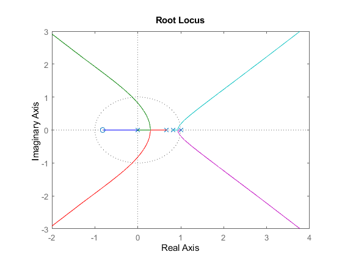
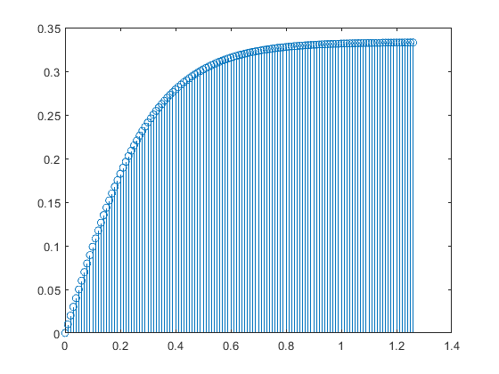
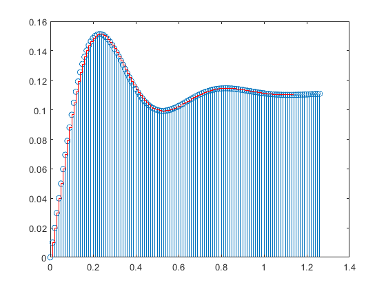

Contents
- Lab_12 problem 3.1 from lab 11
- discritizing the controller using tustin
- discritizing the tf using zoh method
- obtaining the open loop discrete tf
- analyzing the closed loop stability depending on k with rlocus
- generate the control signal c(kT) starting from the discrete controller structure
- generate the control signal for ref(t) = 1;
- hw for k = 3 represent the command signal
- we can simulate the simulink example:
Lab_12 problem 3.1 from lab 11
clear; clc; close all;
k = 1; taum = 0.02; %s Hc = k*tf(1,[1 0]); %controller structure Hp = zpk([],[-20 -40], 2400, 'iodelay', taum)
Hp =
2400
exp(-0.02*s) * -------------
(s+20) (s+40)
Continuous-time zero/pole/gain model.
discritizing the controller using tustin
%( % tustuin-bilinear transformation: % we replace s -> 2/T(z-1)/(z+1) % % backward Euler transformation: % we replace s-> (z-1)/T/z % % forward Euler transformation: % we replace s-> (z-1)/T % ) %time constants of the process, the time delay and the input frequencies % time constants: 1/20, 1/40 (we have to choose the biggest one) -> 1/20 (50ms) % and compare it to the time delay whitch is 20 ms % we see that 10 ms would be sufficient to cover the time constants and the % time delay to; T = 0.01; Hcd = tf(T,[1,-1],T) %discrete tf for a controller (integrator) using forward euler
Hcd = 0.01 ----- z - 1 Sample time: 0.01 seconds Discrete-time transfer function.
discritizing the tf using zoh method
Hpd = c2d(Hp,T,'zoh')
Hpd =
0.098576 (z+0.8187)
z^(-2) * ---------------------
(z-0.8187) (z-0.6703)
Sample time: 0.01 seconds
Discrete-time zero/pole/gain model.
obtaining the open loop discrete tf
Hold = Hcd*Hpd
Hold =
0.00098576 (z+0.8187)
z^(-2) * ---------------------------
(z-1) (z-0.8187) (z-0.6703)
Sample time: 0.01 seconds
Discrete-time zero/pole/gain model.
analyzing the closed loop stability depending on k with rlocus
rlocus(Hold) %stability: % a system is stable if it is in the unit cricle % we have 5 branches % for k from 0 to 7.86 the sys is asimptotically stable % behaviours: % k from 1.01 to 7.86 the closed loop system is underdamped % k = 1.01 the system is critically damped % k from 0 to 1.01 the system is overdamped damped % k = 7.86 the system is undamped
generate the control signal c(kT) starting from the discrete controller structure
%C(z) = Hcd(z)*E(z) %C(z)*(z-1) = 0.01*E(a) now apply the inverse Z transfrom % c[(k+1)]-c[kT] = 0.01*e(kT) % c[(k+1)T]-c[kT] = 0.01*(ref(kT)-y(kT)) we shift it back with one sample % c(kT)=c((k-1)*T) + 0.01* (ref((k-1)T)-y((k-1)T))
generate the control signal for ref(t) = 1;
store the outputs y(t);
y = step(feedback(Hold,1)); c(1)=0; for k=2:length(y) c(k)=c(k-1) + 0.01* (1-y(k-1)); end t = 0:T:(length(y)-1)*T; figure; stem(t,c);
Warning: Use the state-space representation for more efficient modeling of discrete-time delays.
hw for k = 3 represent the command signal
k_3 = 3; Hcd_3 = Hcd*k_3; Hold_3 = Hcd_3*Hpd,1; y_3 = step(feedback(Hold_3,1)); c_3(1)=0; for k=2:length(y_3) c_3(k)=c_3(k-1) + 0.01* (1-y_3(k-1)); end t_3 = 0:T:(length(y_3)-1)*T; figure; stem(t,c_3);
Hold_3 =
0.0029573 (z+0.8187)
z^(-2) * ---------------------------
(z-1) (z-0.8187) (z-0.6703)
Sample time: 0.01 seconds
Discrete-time zero/pole/gain model.
Warning: Use the state-space representation for more efficient modeling of
discrete-time delays.

we can simulate the simulink example:
by calculating the tf from ref to command signal
H_ref_c = feedback(Hcd_3,Hpd); cs = step(H_ref_c)/k_3; ts = 0:T:(length(cs)-1)*T; hold on stairs(ts,cs,'r'); hold off legend('calculated control signal', 'simulink control signal')
Warning: Use the state-space representation for more efficient modeling of discrete-time delays.